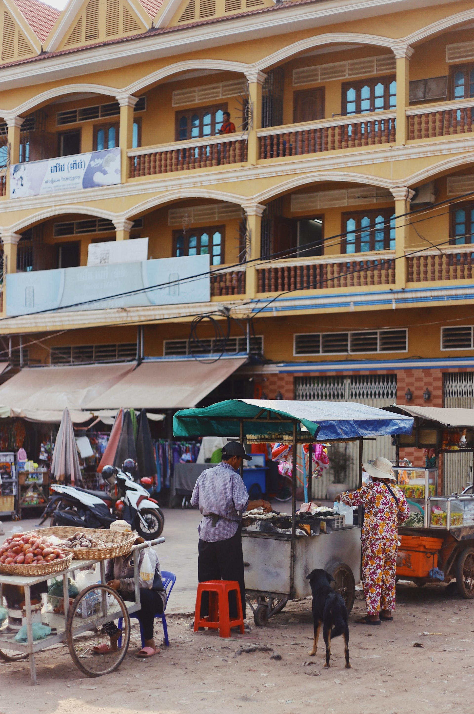

Preface
There is something about Cambodia, which has captured my imagination and mobi-lised my capacity to feel sympathy and concern. I have only been one year in the country and my knowledge of the language is extremely basic, but I have done quite a lot of thinking and tried to be as observant as possible. I now feel, prematurely as it may be, that I want to put down in writing some of my thoughts about the country and its people. Just for the record.
Exactly because I feel committed, I take the liberty to be frank wherever my com-ments are not flattering. I prefer to call a spade a spade even if it amounts to unortho-dox or politically incorrect statements; it will be, of course, up to the reader to appre-ciate them.
Some Historical Remarks
The name Cambodia (in Khmer: Kampuchea; older pronunciation: Kambuja) is of In-dian origin, as is much of Cambodian culture. It means descendants (or sons) of (Prince) Kambu. According to Cambodian mythology, one of the sons of Prince Kambu from Southern India, fleeing internal rivalries at home, emigrated eastwards and landed on an island where the mythical creatures (half-humans and half-snakes) called Naga lived. There, he married princess Maera, daughter of the Naga King, and so was the Cambodian dynasty born. Later on a miracle took place, and the island of Naga (an island by the same name still exists, near the coast of Sihanoukville) expand-ed and became a whole country, Cambodia. A combination of the names Kambu and Maera (K + Maer) gives the word Aekmr (= Kmaer), which is the name of the peo-ple of Cambodia. (Do not at this point look for logic in the sequence of the letters of this word in the Khmer script…)
This myth seems to reflect some historical reality. Cambodians did receive a number of “civilising missions” from India. Cambodian religion (first Hin-duism and, later on, Buddhism) originates from the same source, and much of the Khmer vocabulary stems from Sanskrit and Pali. The Khmer script originates from Southern India too, and Indian traits are discernible in archi-tecture, music, dance, food and in the features of many Cambodians.
The first historical information on Cambodian society is found in Chinese sources, which talk about two (Cambodian) kingdoms in the first centuries AD, the kingdom of Chenla in the North and that of Phunan (probably a Chinese distortion of Phnom, which means mountain) in the South. These two kingdoms merged to form the great Empire of Angkor, called so be-cause of the name of its capital. Angkor, the oldest and the greatest Empire of South East Asia, flourished between the 8th and the 13th century AD. Its borders included much of contemporary Thailand, Laos, Southern Vietnam, and reached until Burma. Angkorian civilisation influenced the Thai, the Laotians and the Burmese in many ways, including the script. The great complex of temples known as Angkor Wat, one of the biggest in the World, originates from that period.
After the 14th century the Empire gradually declined. It was attacked first by Champa and then by the Vietnamese and the Thai. The situation be-came far more serious by fierce rivalries within the royal family. Rivals used to make alliances with either Vietnam or Thailand, each time giving away substantial portions of Cambodian territory in exchange for support in their internal power struggles. This peculiar trait of Cambodian history is still haunting the country until today...
Ironically, what saved Cambodia from being devoured by her neighbours was French colonisation, which lasted from 1864 until 1953. That year, King Norodom Sihanouk orchestrated a masterly planned international campaign, which left the French no option but to recognise Cambodian in-dependence. Cambodia’s Odyssey since then seems to follow the personal Odyssey of Sihanouk.
Only one year after independence, Sihanouk abdicated from the throne in favour of his father, Norodom Suramarit, and became a politician. He formed his own political party , which advocated some kind of Buddhist Socialism, and won all the seats in the Parliament!
Sihanouk ruled Cambodia until 1970. As a ruler he was authoritarian and in-tolerant of dissent, but at the same time unbelievably popular. As a politi-cian he was shrewd and possessed an astute judgement, but also very errat-ic, except on one point, the survival of his country. He developed to perfec-tion a technique of calculated unpredictability and became the master of playing the enemies of Cambodia against each other. He went to great lengths to keep the Vietnam war away from Cambodia but failed. The Vi-etcong were supplying the FNL in South Vietnam through Khmer territory, which led the Americans to bomb Cambodia. Finally, Sihanouk was over-thrown in 1970 (while on a trip abroad) by pro-American general Lon Nol.
During the Lon Nol years (1970 - 1975) Cambodia was overwhelmed by rampant corruption, incompetence, Communist insurrection and escalation of the American bombings.
April 1975 was a significant month in Indochina: the Cambodian Com-munists (Les Khmeres Rouges, as Sihanouk nicknamed them in the 60:s) took Phnom Penh on 17 April, while on 30 April the Vietcong captured Sai-gon. The Americans fled in panic from both countries. The Khmeres Roug-es, under the mysterious Pol Pot, declared 1975 as Year Zero and ruled until January 1979. That year the country was invaded by Vietnam, which liber-ated Cambodia from Pol Pot’s murderous rule but, “in exchange”, installed a friendly regime and kept its troops in the country until 1989, thus causing deep resentment to the Cambodian people.
The rule of the Khmers Rouges was truly totalitarian and far more brutal than its model, which was the Chinese Cultural Revolution. All cities were evacuated, money was abolished, religion was prohibited, temples were de-stroyed, travels and communications prohibited, all professionals and intel-lectuals exterminated, family was dissolved and approx. 2 million Cambo-dians (out of a total of 7-8 million, at the time) died. It was even prohibited to own kitchen utensils, to make food at home, or to wear any other kind of clothes than black pyjamas, similar to those used by Chinese peasants.
From 1979 until 1991 Cambodia was ruled by the pro-Vietnamese Com-munist Government of Hun Sen and Heng Samrin. In the meantime, Sihan-ouk was living in exile in Peking and in Pyongyang, as the nominal Head of the anti-Vietnamese resistance, which included the Khmeres Rouges! Pol Pot launched a guerrilla war from the jungle, which in a sense continues un-til this time albeit in insignificant scale.
In 1991 the United Nations finally managed to hold a Peace Conference in Paris, as an outcome of which Cambodia was placed under the authority of a special UN organ, the UNTAC (United Nations Transitional Authority for Cambodia). In 1993 the first democratic elections were held, which were won by the Sihanoukist party FUNCINPEC, led by Prince Ranariddh (son of Sihanouk). Hun Sen’s party, the CPP, came second, but refused to cede power. Sihanouk, who in the meantime became King again, “solved” the problem by requesting both parties (and even the small Buddhist Liberal Party) to form a coalition Government. Thus, Cambodia today has a plural-ist democracy but practically no opposition, since all major parties are in the Government. Appropriately (and in line with ancient Khmer traditions), the only form of opposition is that of fierce rivalries within the Royal Govern-ment.
The Geography of Cambodia
Apart from history and culture, the myth of Naga also reflects the geographical reali-ties of Cambodia: the central plains of the country were covered by the sea in prehis-toric times. Even today, the level of these plains is so low, that they get easily flooded during the rains.
These plains are surrounded by mountains. At the centre there is a big lake, the Tonle Sap, which is linked with the Mekong by the Tonle Sap river. During the rains (June - October) the flow of this river is reversed, which is a unique phenomenon, and the size of the lake doubles. The lake and the surrounding plains is the food basket of Cambo-dia and the area where most Khmers live. The mountains are either covered by impen-etrable jungle or inhabited by hill tribes. Even the coast is not a favourable abode for the almost exclusively rice-farming Khmers: there is hardly any significant city there. Sihanoukville (renamed Kompong Som during the Lon Nol regime) was built by Si-hanouk in the 60:s to serve as a port, but a visit to the town convinces that the Khmers are not a seafaring nation: the town faces the inland and not the coast. In fact, the sea is totally invisible from downtown Sihanoukville!
Cambodia is at its best in places like Pursat or Battambang (the country’s second larg-est city): semi-rural towns located in beautiful fertile plains, and built along rivers leading to Tonle Sap. The only truly urban environment is Phnom Penh, which is per-haps the prettiest city built by the French in Indochina. Today Phnom Penh is slowly recovering after all the blows of the recent past. Parts of it do reveal the city’s old charm, but a lot of investment and effort is needed to upgrade its dilapidated infra-structure.
What is accessible of the Cambodian landscape, i.e., the central plains and the coast, is beautiful and pleasant but not breathtaking. I personally find the landscape of Malay-sia and Indonesia more scenic. The mountains do offer some capturing views, but they are mostly inaccessible.
Political Situation
After so many years of warfare, Cambodia is now struggling against the odds to achieve real democracy. The difficulties are many: civil society is weak, corruption is all pervasive, the legal system is destroyed, and, above all, Cambodian civilisation does not favour pluralism and individual freedom, neither does it provide paradigms of sound and unselfish leadership. Intrigues, intimidation and even political assassina-tions are not uncommon, while some of the politicians, notably those affiliated with the CPP, seem to be inspired by the authoritarian style of Mahathir (Malaysia), Lee Quan Yew (Singapore), or Souharto (Indonesia), all of whom dismiss Human Rights as “Western” and, thus, unfit for Asia.
Although there is freedom of expression, many politicians are not used to public criti-cism and react harshly. Journalists, for that matter, are not used to free speech either and many of their newspapers can only qualify as yellow press. The absence of any significant tradition in writing and reading does not make things better.
An additional problem is that the “co-governance” of Ranariddh (FUNCINPEC) and Hun Sen (CPP) is far from smooth. According to Sihanouk’s original idea, both these gentlemen are Prime Ministers, and all the important ministries have two co-Ministers, one from each party. However, instead of co-operating, the two parties seem to sabo-tage each other, while from time to time the conflicts become open. The army is divid-ed along party lines and skirmishes between the two groups have occurred. Be it as it may, however, Cambodia might already at this stage qualify as the most liberal and democratic country in the region of South East Asia (with the possible exception of the Philippines).
The next elections are anticipated for 1998. Many scenaria have been projected as to what is going to happen. Much depends on the personal fate of the actors involved, namely Sihanouk, Ranariddh, Hun Sen, Chia Sim (CPP Chairman) and Sar Kheng (CPP emerging contender to Hun Sen’s position). However, if there is no change in the individual set-up, the chances are high that the two parties will be in coalition again. In Cambodia the only thing that matters is position and power; thus, if the coa-lition splits, the losers of the elections will have to relinquish power, the mere thought of which is a nightmare. It appears, therefore, that Cambodia, for yet some time to come, will not be ready to accommodate real opposition.
The Personalities: Norodom Sihanouk
“Comme il est mignon cet petit!” exclaimed the wife of the French Governor when she first met 19-year old Prince Norodom Sihanouk in the early 40:s. The French wanted a docile King for their Cambodian protectorate. They were not satisfied with an already pliant Sisowath Monivong, Sihanouk’s predecessor; they wanted somebody even more obedient, who would only care for the Royal Ballet and nothing else. They thought that this mignon boy with a high-pitched voice would be what they wanted.
How wrong they were! As we saw earlier, Sihanouk was the one to achieve the inde-pendence of Cambodia and, in many ways, this independence has been synonymous with his name ever since.
Sihanouk is the personification of charisma and a great political mind. Samdech Euw, as Cambodians call him, is indeed a very unique person and, because of his position, Cambodian culture allows (in fact, expects) him to be unique.
Once a playboy (he claims that since he won the heart of Queen Monique, he opted for monogamic life), Sihanouk is also a gourmet, a bon-vivant, a saxophonist, a com-poser, an author, an actor, a film director and many other things. A fascinating person-ality, he has the tremendous capacity to inspire confidence. Many World leaders who have met him have treated him not only as a statesman, but as a personal friend. It was thanks to such bonds of friendship that he has survived the one crisis after the other. For example, when the Khmeres Rouges kept him under house arrest from 1976 to 1979 (and killed six of his children), it was at the personal insistence of Tsou En Lai that Pol Pot spared his life.
Sihanouk has definitely been modern Cambodia’s greatest asset, but also a liability: like so many leaders of his stature, he opted for personal rule and never wanted to cre-ate anything greater than himself. Thus, he never really tried to give Cambodia sound institutions.
Sihanouk is for Cambodia the equivalent of Olof Palme in Sweden, and much more. Cambodians adore him. The day he passes away, Cambodia will no longer be the same. Just like Sweden: it is no longer the same country since Olof Palme was assassi-nated.
Personalities: Saloth Sar (Pol Pot)
When the Khmers Rouges took Phnom Penh in 1975, nobody knew who was their leader. It was only after one and a half year that the name of the Prime Minister was disclosed: Pol Pot. Nobody had ever heard of him. However, when his picture was published, his own family were surprised to see that he was their own Saloth Sar, which is his real name. He had disappeared without trace many years ago, having gone to the jungle to join the guerrillas. When Phnom Penh was taken by the Khmeres Rouges, Pol Pot did not join his men in their triumphant parade into the capital. In-stead, he arrived secretly, several days later, when the city was almost completely evacuated...
Very little is known about Pol Pot. He himself admitted that he was Saloth Sar only in 1979, after his fall, while on a trip to China. On the same occasion he also admitted the existence of the Cambodian Communist Party, until then held secret (the people only knew of a mysterious Revolutionary Organisation - Angka Padevat and of Brother No. 1). It seems, that during his years in power, Pol Pot eradicated all information about his personal life. His public appearances were extremely few and he never became the ob-ject of a personal cult, like other Communist leaders. Total secrecy appears to be the motto of his life. Those few, who have met him, say that he is a handsome and soft spoken man, polite, sensuous and convincing. He gives the impression that he does believe in his beliefs, which may be the very se-cret of his success (apart from secrecy itself). They all agree that this gentle person could not possibly commit such ferocious atrocities, like the genocide of some 2 mil-lion people. And yet, there is no doubt that he did. All Cambodians, in unison, testify about his horrifying crimes, and people do not lie collectively!
A Case of Mental Cloning?
It is often said, that you cannot generalise when you talk about an entire nation. But in some cases it may be easier than in others. If one imagines the notion of personality as a circle, part of which is what we call the “national character” while the rest is a person’s individual traits; the border between these two parts is not the same in all cultures. In Cambodia, national character is all-pervasive and leaves extremely little space for individual variation. It is as if all Cambodians had identical “software” installed in their minds. How else can you explain that 10 million Cambodians unex-ceptionably consider plain white rice (without even salt) as the quintessence of all cui-sine ? If people were allowed to freely develop their own minds, this would be unnat-ural, for 10 million people could not possibly have exactly the same taste! - Rizomania - is only one example. The Software tells everybody what and how to eat , how to hold a knife when he peels the onions, how exactly to stretch his legs or his arms, what time to go to bed, what time to get up, what to like and what to dislike, when and how to get married, what exactly to say in a conversation, and many other things. Such natural differences among people as being introvert or extrovert, choleric or phlegmatic, early sleeper or early riser, are totally eliminated by the software! If you meet one Cambodian, you met them all! The only real variation is found in people’s looks (you still find long and short, fat and thin, beautiful and ugly Cambo-dians...), in their capacities (varying degrees of IQ etc.), and, to some extent, in their moral qualities (not in their values, though).
I am inclined to think that the vehicle of this and any other mass-software is the lan-guage. Far from merely being a means of communication, language, embodies values, thinking, wisdom, and “tunes” the minds of the people with a number of “com-mands,” which are automatically activated whenever necessary. The Greeks, who rec-ognised this already in ancient times, went so far as to define their own identity not on the basis of origin, religion, geography, or political/administrative bonds, but on the basis of their language and its special characteristics as a vehicle of civilisation, a sort of human “software.”
Taking these assumptions for granted, I would attempt to commit the politically incor-rect offence of formulating some generalisations about the Khmer psyche. I would then describe the Cambodians as very gentle and sensuous people, friendly, shy, po-lite, and accommodating. They would never raise their voice. Their answer to every-thing is a “yes” and a smile. Never opinionated. They are too eager not to loose face in public, and they consider anger as a synonymous to madness. Cambodians would ap-pear to most Westerners as genuine conformists, who are not interested in ideas or in challenging things but only concerned about their survival. They give the impression that they only care about the security that money offers and only cherish wealth and power. Other values of life, such as love, friendship, Justice, fairness, honour, or digni-ty, are very low rated and matter very little.
Cambodian minds are tuned to stoically accept all the pressures of a strictly hierar-chical society: like in most developing countries, social stratification in the form of a pyramid is the most important social structure. If you are placed at the bottom of the pyramid, the Software tells you that you are nobody. You are not supposed to express your feelings or thoughts in public, let alone to ventilate your frustration: the Software offers you no legitimate outlet. But if you are on the top of the pyramid, you are con-sidered ipso facto as more handsome, more intelligent, and more capable than others, you have better rights than others, and you are even allowed to be a person and to ex-press your feelings, including your anger...
This suffocatingly stereotype and collectivist Weltanschauung may be the very reason to the paradox, that Cambodia alone in all Indochina possesses such an impressive ar-ray of characters at the top of its society: those few who manage to withstand the enormous pressure of totalitarian collectivism must be gifted with extremely strong personalities. Alas, they are often so terribly strong that they place narcissist self-interest above anything else in the World.
Another very typical 3rd World trait is the role of religion in Cambodia. You can never miss the omnipresent Buddhist monks: practically at any time, they and their pious followers organise never ending rituals, processions, festivals, and the like. The sad part of it is the “noise pollution” that they produce (the motorcycles of Greece are the only serious competitor!). Buddhist rituals could indeed be beautiful if it were not for all blaring loudspeakers tuned to the maximum volume and yelling on the most unpredictable occasions. In Islamic countries, by comparison, the loudspeakers are turned on at fixed hours, which render them a little more bearable...
For those who believe that Buddhism is a philosophical religion, Cambodia could be a disappointment. Popular belief among Khmers is a mixture of ghost stories, supersti-tion and “magic”. One Judge told me, that in case I was attacked by a robber, I should recite a ritual phrase seven times, after which, as he insisted, the robber would run away. This approach to life seriously competes with rational thinking, which is slowly being introduced in Cambodia today. People turn to superstition and irrationality to find easy answers, instead of doing some thinking (and, why not, producing some ideas).
To be sure, a nation does dot produce ideas just because its people are gifted. My own nation, the Greeks, have overwhelmed the World with ideas; and yet, I have never noticed any sign showing that the Greeks are more intelligent than others (albeit many of my compatriots keep trying hard to impress on foreigners, thus running the serious risk of being classified as arrogant idiots…). But ideas come from minds, and minds need to be free in order to flourish and release their forces. This can only be achieved in individualist societies. Collectivist societies, by smashing individual mind, are good in producing objects, but not ideas. Have you ever heard of a poem composed by a committee?
Religion, or rather superstition, along with hierarchy and collectivism are in my opin-ion the three most important “command.coms” of the Cambodian Software, which is installed in the minds of everyone and defines all his functions in detail. Thus, like many other cultures in the World, especially in the 3rd World, Cambodian is a mass-culture with no room for individual personality. The paradigm is that of the flock of sheep, which are all the same, all white, and follow each other blindly. Black sheep are not tolerated in the flock and must be chased away.
A lot of debate is going on these days on cloning. My experience of Cambodians is that their cultural indoctrination is so thorough, profound, and efficient, that they can be considered as (mentally) cloned for all practical purposes (unless it is a case of very advanced collective telepathy) ... I have until now met hundreds, if not thousands of Cambodians, and in 100% of the cases exactly the same conversation is repeated, per-fectly predictable each single time, including the mistake of always taking me for a Hungarian (see the reproduced dialogue below)!
Lack of individuality may be a typical 3rd World trait, but in Cambodia it is enor-mously aggravated by the astonishing fact that Cambodians never read books. Thus, their exposure to the World of ideas and choices is minimal. Instead, Cambodians are ruled by the rigid oral traditions of a rural society, which are embodied in the language and simply require everybody to conform and to comply rather than to think and to question. As long as Cambodia remains the place where there are hardly any bookshops (not even in the capital!) and where the sight of a man holding a book in his hands and reading it is unknown, mental cloning will be there for a long time to come and Cambodia will not be a society of ideas and quality of life.
The Nature of Khmer Culture
As a corollary of the above, there is very little scope for privacy in Cambodian society. You notice people searching each other’s bags and pockets, and if you happen to talk to somebody in the street, several others approach to overhear the conversation (in a very indiscrete manner!). If you ask them to go away they fail to understand why, and they just stay on, which can be very irritating.
The said lack of interest in the written speech is also a very disappointing trait of Khmer culture. There is very little literature in Khmer. Occasionally you will see somebody reading a newspaper, and then you will notice that he reads loudly, as all semi-illiterate people usually do. - Well, it is not easy to be very literate in Khmer an-yway: the script seems to have been intentionally designed in such a way, that only the elite could possibly master it. When you read a Khmer text you do not actually read, you decipher. Now, add the extra difficulty of joining all words together (no space in between), and you will get the picture... It would not surprise me, if a special-ist in linguistic psychology would suggest some connection between the erratic Khmer script and the equally erratic Khmer psyche.
Nevertheless, Khmer psyche is not always erratic. On some points it is very consistent, and one such point is its profound fixation to wealth and power. Khmer thinking is power- rather than justice-oriented. Equality of Law, for example, is a very low rated value, and it is considered as perfectly normal that “the bold and the beautiful” enjoy more rights than others, and that they can buy not only cars, houses, wives, or sex, but also justice with their money.
Where does the greatness of the Angkorian civilisation fit in? Well, Angkor was cer-tainly a great civilisation, but a Pharaohnic one. A civilisation based on the absolute power of the God-King over the anonymous masses. It was nothing like the ancient civilisations of Europe, which freed the individual. When Pythagoras visited Egypt and saw the pyramids, he wanted to know who had built them, but got no answer to his query: the Egyptians could not care less about who had created the pyramids. Some people made them, it doesn’t matter who, the credit goes to the Pharaoh any-way... The same applies to Angkor and its magnificent edifices.
This heritage of Angkor haunts Cambodia still today. If Cambodia wishes to be a democratic society, with justice and equality of Law as its leading social values, and a society which produces ideas rather than objects, it needs reform. It needs to free the individual from all this suffocating imposition of stereotype behaviour, this rather un-natural uniformity of thinking, feeling and taste, so that also the enormous powers hidden in everyone can be released. In other words, Cambodia needs to enter the 20th century, and to be exposed to the outside World, to new ideas and lifestyles. History shows that no great civilisation can flourish and remain great unless it opens itself to such an exchange of ideas.
If Angkor is of any value, (apart from the aesthetic value of its monuments), it is ex-actly because it shows that the Khmers are capable of absorbing new ideas. In the same way as Angkor once merged Indian with indigenous Khmer ideas to produce such an array of magnificent masterpieces, Cambodia today could absorb modern thinking and combine it with whatever is worth preserving from her own tradition.
Ancient Civilisations: Cambodia and Greece
It is often assumed that ancient nations understand and feel sympathy for each other. In her eternal conflicts with Turkey, Greece finds that countries whose history is of the same length (if not of the same nature as well) as her Eastern neighbour tend to understand the Turkish viewpoint rather than the Greek. Younger European nations display a profound pride for all their achievements but fail to understand what is there to be proud of as a Greek or an Italian. On the other hand, the Chinese are known to consider everybody as a “barbarian,” but they do make an exception for Indians, Greeks, and Italians. Similarly, I have noticed a kind of “understanding” between former colonial powers. Thus, a Greek and an Englishman tend to speak the same lan-guage, while an Irish, for example, would stick to a more politically correct anti-colonialist parlance.
If ancient history in itself is a similarity strong enough to create solidarity, on the other hand, the similarities do not extend much beyond this point. Both Greece and Cam-bodia have a long history, both countries have been splendid Empires and influenced other nations, and both have declined in the course of time. Also, both countries have been “eaten up” by their neighbours and reduced to minuscule chunks of land. But there are important differences. One of them is that Greek territory was lost due to Greek decay and weakness, while Cambodian territory was practically given away by rival branches of the royal family (or am I saying practically the same thing about both of them?).
More important are the differences regarding the nature of the two civilisations. Greek civilisation is clearly individualistic (this is of course the case of our idealised ancient Greek civilisation; I am not so sure that modern Greeks have inherited much of this ingredient).
Furthermore, Greek spirit is curious about the outside World (again: the Greeks of to-day have not inherited this trait. They even fail to display interest in what happens in the many and important Greek communities outside of Greece.) Until quite recently, the Greeks have promptly absorbed influences from all directions, including the ...much-despised East. The very word Europe, a Greek word, means a woman with wide-open and curious eyes.
Although Khmer civilisation started open-mindedly and was initially based on an in-tensive processing of foreign influences, it soon ended up in isolationism. Today, Cambodians display a total lack of interest for the outside World. Even the relatively well-educated will confuse Brussels with Brazil and ...Brunei (sic) and, of course Sweden with Switzerland, not to mention their placing Australia and Canada next to each other in their mental map - if they know these places at all, that is, because Cam-bodians know even less about the World than Americans! Under these circumstances, acceptance of new ideas is an extremely slow and cumbersome process.
Unlike Khmer civilisation, the Greek has always revolved around the written Word, which is another significant difference. Even during the 400 years of Turkish rule, when schools were suppressed and printing of books was a capital offence, tons of Greek literature of all kinds was produced in Florence, Venice, Vienna, and other cen-tres of exiled Greek communities. And today, at a time of continued political and economic decay and regional insecurity (which other Europeans usually fail to under-stand), Greece experiences an unprecedented glossoplasteia, i.e., a most prolific crea-tion of new words and expressions, while literature is also flourishing. In Cambodia, by contrast, the total lack of interest for writing books, and even keeping historical records, resulted in an unprecedented loss of memory: unbelievable as it may sound, the Khmers had forgotten the very existence of Angkor Wat, until the French discovered it last century and made it famous!
And then, Khmer civilisation, unlike the (ancient) Greek, does not pursue humanity and measure. In contrast to the perfect size of Acropolis (neither too big nor too small), Angkor Wat is an oversized Pyramid that seeks to intimidate the visitor with its sheer volume. Where Acropolis seeks to project something humane, Angkor Wat projects the mighty power of the God-King (preah) over all commoners. Naturally, there is no room for questioning of authority here.
The Spices of an Expatriate’s Daily Life
An expatriate’s daily life in Cambodia can be a mixture of everything, ranging from uneventful monotony to rather exciting curiosities, and from comfortable pleasure to irritating nuisances, such as the constant electricity outages or the terrible noise pollu-tion. Generally speaking, life in Cambodia is not as exciting as in Africa, not as com-fortable as in Malaysia, and not as troublesome as in several other developing coun-tries, where you are constantly plagued by hordes of beggars, cheats, and street ven-dors. There are many nice places if you like to walk around (as I do) and street life can be enjoyable. Especially Phnom Penh could be described as an ideal city for taking a stroll. It reminds of a provincial French town and is almost intentionally made for spending your time in the streets, where you are relatively undisturbed. Apart from an occasional beggar or two (you gradually learn to avoid their strongholds) and the ped-icab drivers, who are constantly searching for customers, most other people are polite, shy, and decent. - But if someone decides to come forward with the usual “I want to say English with you,” then you got a whole flock around you, at once. Practically every passer-by will stop to overhear the conversation, and you will feel like a specta-cle. In Cambodia, a conversation can never be private, and it is always very predicta-ble. Never anything different or controversial.
A typical sample could be like this:
- Accuse me, I won say Engli wi you (=Excuse me, I want to speak/practice English with you).
- Omilo mono Ellinika (=I only speak Greek).
- Accuse me, I can’ listen you (=Excuse me, I can’t understand you - “it sounds Greek to me” -).
- I don’t accuse you of anything. I am not a prosecutor!
- Nevermai. Wa i yo name? (=Never mind. What is your name?).
- Gerassimos Evangelou Fourlanos. What is your name?
- Yo name i Peakaday (=My name is Peakaday). Yo jo i wa (=What is your job?)./p>
- I am a Lawyer.
- Nevermai. How ow a you? (=“Nevermind.” How old are you?).
- I am 75 years old.
- I very happy say you. How many chay you ha? (=I am very happy to talk to you. How many children do you have?).
- I have no children.
- No chay? No belie you. You lie! Whe i yo why? (=No children? I do not believe you. You must be lying! Where is your wife?).
- I have no wife.
- You slee only one any ny? Very boring! I can sen you beautifu why (=You sleep alone every night? Very boring! I can send you a beautiful wife).
- I like to sleep alone. I do not want anybody else in my bed and I snore a lot.
- In Kampuchea many beautifu ge. You lie taxi-ge? You sen one yo how (=In Cambodia there are many beautiful girls. Do you like call-girls? I will send one to your house).
- No thank you, I am not interested.
- Prakhae lok ponman? (=How much is your salary? - usually this question comes in Khmer, for no obvious reason...).
- Bay roi dolla (=Three hundred dollars).
- Oh, many money! (=Oh, a lot of money!) - Do you lie my country? (=Do you like my country?).
- Yes, I do.
- Oh, I am very happy! Whe i yo country? (=Where is your country?).
- I am from Greece.
- Hongrie? No know. (=Hungary? I do not know it).
- It is called Prateh Krech in Khmer.
- Nea Bulgarie? You know (=Is it near Bulgaria? I know it). You see Angko Wat? Kampuchea very nai ba Pol Pot ki anybody. Vietnamii no goo (=Have you seen Angkor Wat? Cambodia is very nice, but Pol Pot killed so many people. The Vietnamese are not good). I come yo how now (=I come to your house now).
- I am busy now, another time.
- Nevermai, I come, no problem fo me (=Nevermind, I’ll come anyway, it’s not a problem for me).
- I am not going home now. I will continue my walk.
- Can I wo wi you? (=can I walk with you?).
- Not really, I am going to meet my friends.
- You mee my fren? From Bulgarie? (=Will you meet your friends? Are they from Bulgaria?).
- No, they are from Greenland.
- Did you ea rye already? (=Did you eat rice already, which means: have you eaten already?)
- I ate potatoes.
- Do you lie rye? (=Do you like rice?)
- Yes, but I cannot eat it every day, I need a change.
- Where do you go?
- I need to go to Monivong Street. Shall I turn left or right?
- Yes.
- What do you mean by “yes?” Is it left or right?
- Yes, yes, OK.
Apart from streets, markets are also pleasurable in Cambodia. Usually well-stocked and cheap, they offer the most amazing products and services. You can buy fried cockroaches, boiled eggs with a small bird inside, all kinds of electronics (usually fake), detergents, cosmetics and the like (all imported from Thailand, with the labels only in Thai, so that you can never know whether your purchase is a shampoo, a con-ditioner, or an after-shave), and clandestine copies of videotapes. Also, you can hire people to ventilate you with a fan, to carry your bags, to watch your car, and to pray for you...
Many of the vendors in the markets are public servants, sometimes rather high-ranking, who leave their workplaces and go to the market to sell vegetables or fish, because their salaries are insufficient (a Judge earns USD 20.- per month). Thus, you can buy rice from the Judge, chairs from the Bank Manager, or oranges from the Di-rector of the Treasury!
A golden rule when you visit a market is to just buy what you find in front of you. Do not ask questions (“is this a shampoo or a conditioner?”) because you will only get a number of irrational and contradictory answers, thus wasting your time and getting irritated. If you then show your irritation, they will “freeze” you, as if you just es-caped from a mental hospital.
Economy, Development

Cambodia is slowly developing since the fall of her Communist regimes and the intro-duction (I wish I could say, establishment) of an open society. But it has not really taken off. What holds development is the lack of infra-structure (it has been destroyed by the war), the lack of skills (Pol Pot cleared the country from all professionals and intellectuals...), the lack of Law (the country does not even have a Civil Code), the weaknesses of civil society, corruption, and the serious shortcomings of her institu-tions. The prevailing impediment, though, is lawlessness and the image of the country as a very dangerous place to be. Unfortunately, this image is much worse than reality. If you would give any European country the ingredients of Cambodian existence, namely poverty, lack of education, habits of warfare, weak institutions and leadership, corruption, and easy access to guns, you would certainly get a real hell. After all, the overwhelming majority of Cambodians are decent people (one of the bright sides of the Cambodian Software...). At least daily life is rather safe and workable.
Nevertheless, the image of the country does a lot of harm and needs to be improved. One of the ways to change it is to convince the World that Cambodia has become a full-fledged civil society, by means of overhauling the legal system. Regrettably, nei-ther the Royal Government nor its donors seem to have realised this, notwithstanding their fashionable definitions of development.
Law here, as elsewhere in the World, is taken for granted and considered as a matter of routine rather than an important instrument of development and civilisation. Thus, many foreign organisations nag about the lack of Law Enforcement in Cambodia, but they forget that there is hardly any Law to enforce at the first place, and that it takes a lot of effort, expertise, and money to fill the gaps.
Most observers agree that the country will inevitably follow the region in an economic boom and that it is only a question of time. But I am not sure that I would welcome the same kind of (exclusively material) development as in the rest of the region. I have nothing against an economic boom as such, but I do hope that Cambodia, above all, becomes free from the ghost of “tiermondialism” and conquers democracy, equality, justice, and quality of life.
The Comparative Advantages

Making Cambodia the only truly democratic country in the region would be the coun-try’s greatest asset. A place where investors, visitors and tourists would feel free to talk, free to meet anybody they like and free to send letters and faxes anywhere in the World. It is not so in most countries of the region: if you settle in Singapore, they will even monitor your shadow...
In addition, Cambodia already enjoys a series of comparative advantages. The first is the country’s potentiality for tourism. It is perhaps the only country in the region worth visiting for her history and monuments, and not just for her red light districts. In the 60:s, before the war(s), Cambodia used to receive such numbers of tourists that even Thailand could not even dream of.
Another advantage is the geographical position of the country, which is dominated by the Mekong River, a very important regional waterway, while the country itself links Thailand, Vietnam and Laos with each other and with the sea.
The fertile soil of the central plains, coupled with the modest numbers of population (unlike most countries in South East Asia, Cambodia does not suffer from overpopula-tion) only add to this potentiality.
Other comparative advantages are the regional availability of funds for private in-vestment, and the huge development funds pledged by donors. It is often said that no other country has ever received so many pledges by the international community.

Finally, I would mention the civilisatory ambitions of Cambodians as a very important comparative advantage. Their pride over Angkor Wat and all that past greatness might induce them to try to achieve something significant again. As for the lack of books and a literary tradition, it could also be turned to an advantage, in the sense that it is easier to form a tabula rasa than an already shaped stone...
When it comes to the lack of individualism, the Cambodian Software itself could remedy the problem, if some new “commands” are added to it, formulated so as to introduce new ideas and help freeing the minds of the people.
There are indeed reasons for being optimistic; but there are also reasons for being pa-tient, for tiermondialism is extremely deeply rooted in Cambodia and does not go away very easily.
Conclusion

I can hardly think of anything else to say as a conclusion to these reflections of mine, but to refer to a touching inscription I saw in Phnom Penh, near the Mekong River bank: “From this suffering a great happiness will come!”
Alas, this happiness may never come, unless Cambodians start writing and reading books, developing their individual personalities, reforming their feudalist values, and caring not only about money, but also love, friendship, knowledge, justice, honour, and so many other things that make life worth living.
Last, but not least, I sincerely hope that none of those terribly strong personalities at the top of Cambodia, who exclusively engage in pursuing their self-interest, will stand in the way this time.